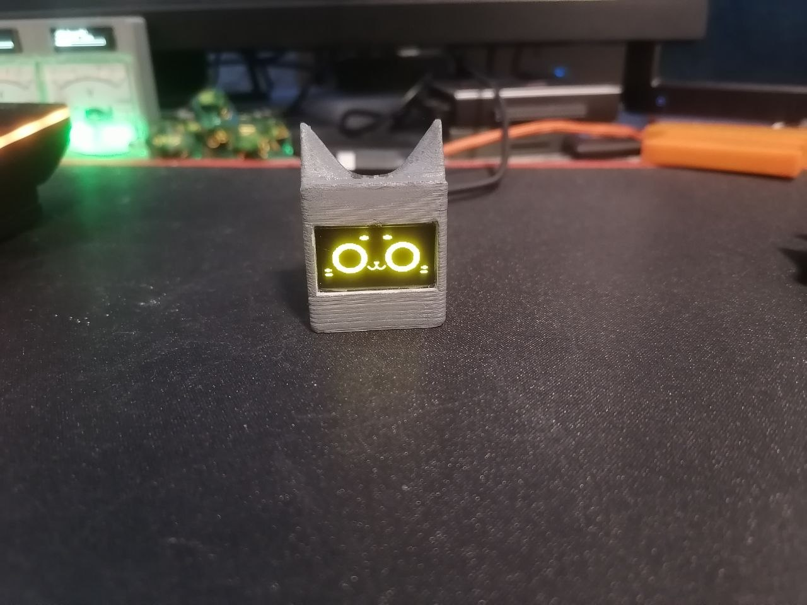
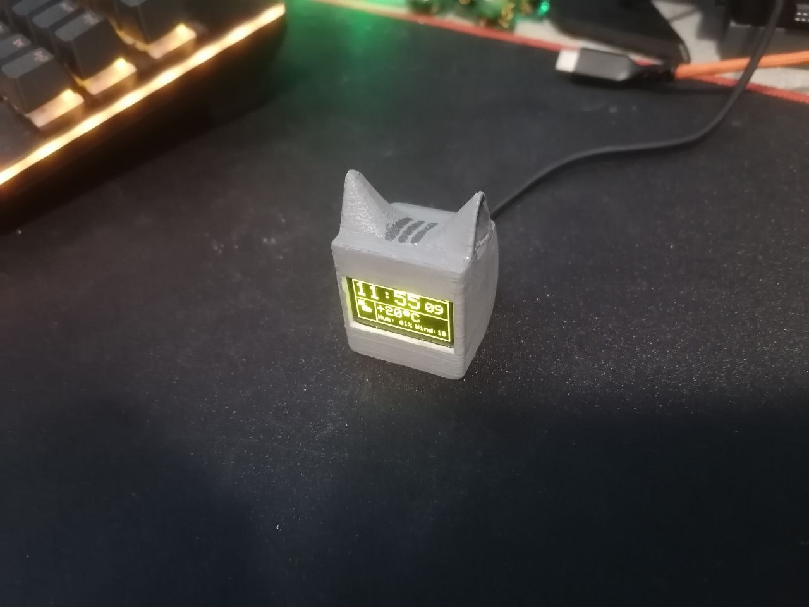

MCU
ESP32-C3
ACTIVE
A small cube shaped companion built around an ESP32‑C3 and a 128x64 SSD1306 display, with cat shaped ears on the case and a capacitive touch sensor on top. The screen shows a bitmap cat face named Kerfus, drawn and partly animated in Photoshop. It has three modes: a static face that reacts to head pats, an idle mode with wandering glances and blinking, and a weather display pulling live data from a weather API for the local city over the home Wi-Fi. A double tap on the cat switches between modes. The enclosure was modeled in Blender and FDM printed.

